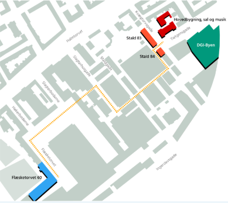

Rysensteen Gymnasium er et gymnasium i København. Skolen blev oprettet i 1881 som Laura Engelhardts Skole i Stormgade 16. Den flyttede i 1895 til Rysensteensgade 3 og blev i 1919 overtaget af Københavns Kommune som Rysensteen Gymnasium. I 1932 flyttede skolen til Tietgensgade.
Siden august 2015 har NORA været en integreret del af Rysensteen Gymnsium. Nora står for:
Således finder man vej mellem hovedbygningen og Flæsketorvet
